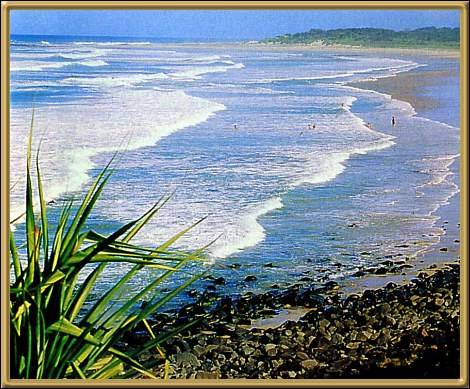

Photographer: Unknown
Ballina is a very popular holiday destination. It's right up at the top of New South Wales, and has very temperate weather most of the year. Warm, sunny, beautiful beaches, and the surrounding countryside is lovely as well.